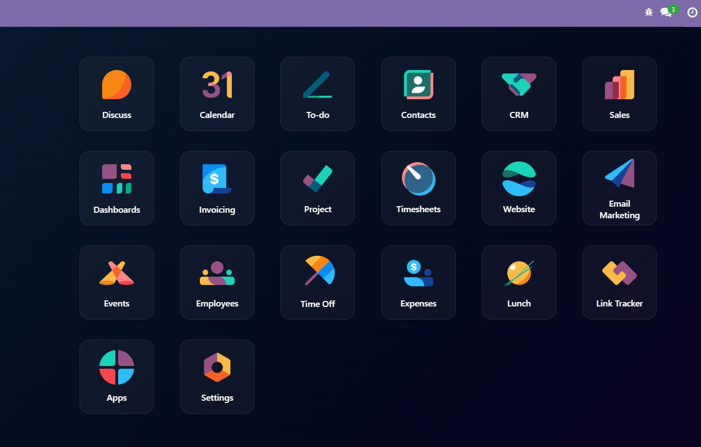
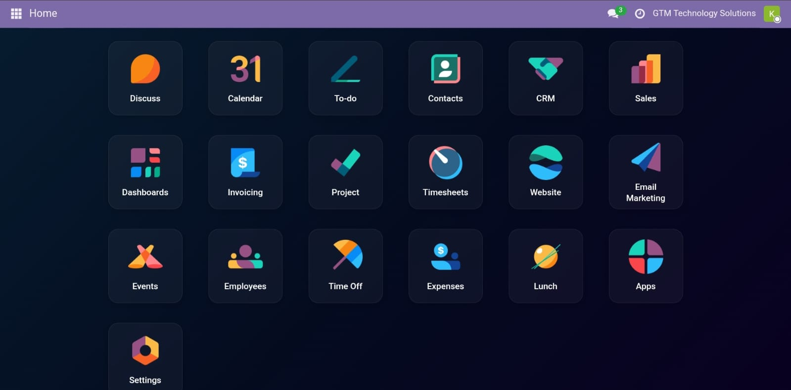
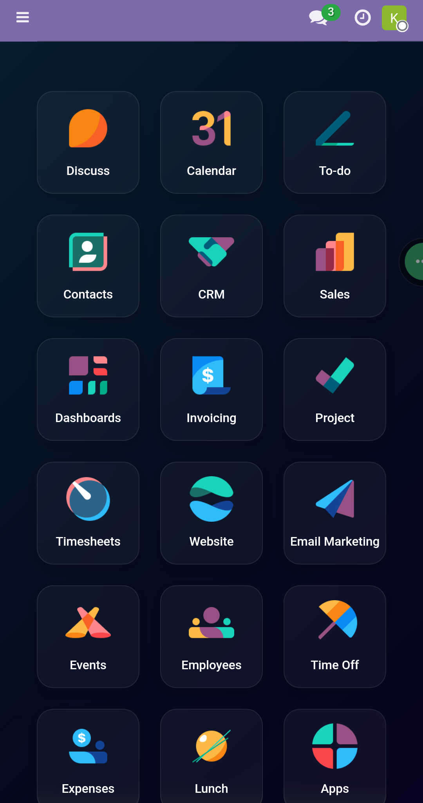

Bring the Odoo Enterprise app overview to your Community installation — a clean, familiar dashboard showing all your installed apps at a glance.

The Odoo SaaS and Enterprise editions greet users with a polished App Dashboard — a central screen that displays installed applications as icon tiles, making navigation intuitive from day one.
Odoo Community users don't get this experience out of the box.
This module closes that gap by bringing a clean, tile-based application dashboard to Odoo Community Edition.
Install it and your users will immediately benefit from a familiar application launcher inspired by the experience available in Odoo SaaS and Enterprise editions.
| Feature | Community | With This Module |
|---|---|---|
| App Dashboard | ✖ | ✔ |
| Application Tile View | ✖ | ✔ |
| Mobile Responsive Layout | ✖ | ✔ |
| Enterprise-style Experience | ✖ | ✔ |


Whether you run a small business, a growing startup, or a large organisation, this module provides a more intuitive way for users to access applications in Odoo Community Edition.
If your users appreciate the polished application launcher available in Odoo SaaS and Enterprise, this module brings a similar experience to Community Edition.
Install the module and start using it immediately.
Odoo 19 Community Edition
Delivering practical, business-focused Odoo solutions that improve usability, productivity, and user experience.
https://gtmtechsol.com